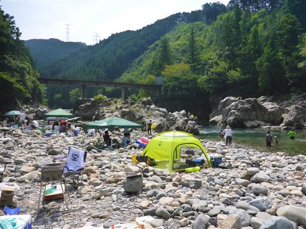
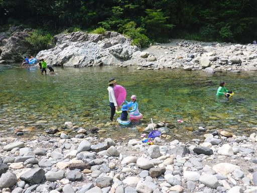
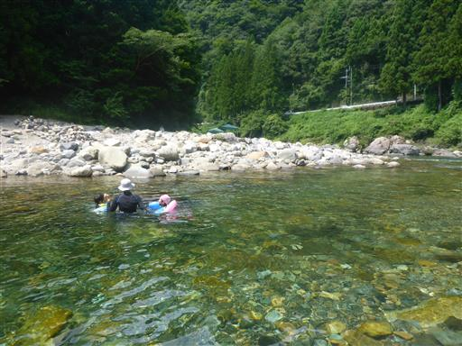
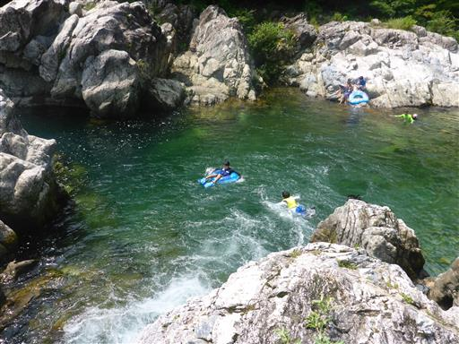
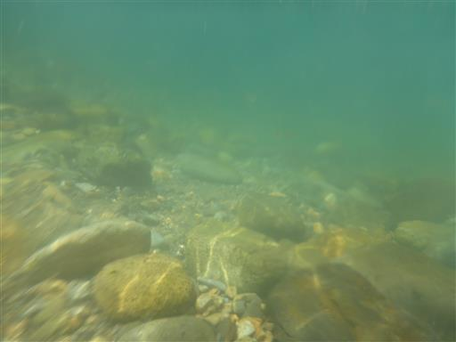
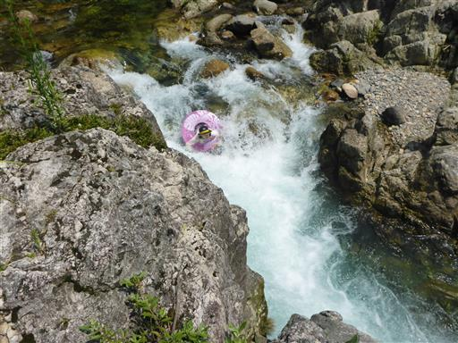
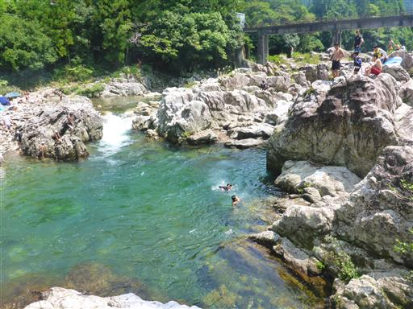
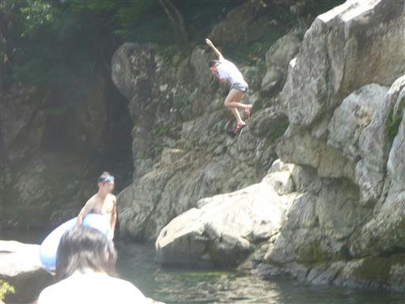
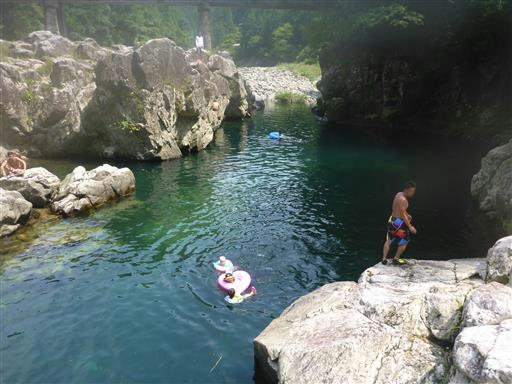
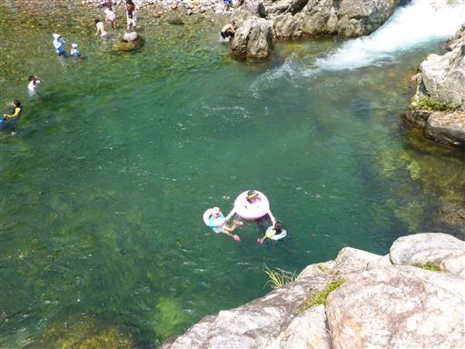

乗鞍旅行
| 日付 | 2016年8月8日（月） - 2016年8月11日（木） | ||||||
|---|---|---|---|---|---|---|---|
| 山域 | 八ヶ岳、北アルプス | ||||||
| メンバー | 家族（妻、長女・5歳、長男・3歳） | ||||||
| 山行形態 | 子連れ3泊4日ホテル泊 | ||||||
| アクセス | 車、バス | ||||||
| ルート |
|
4日目
3日間山に行ったので、最終日は川で遊ぶことにする。
場所は岐阜県内でいろいろ調べ、板取川を選択し現地に向かう。
詳細な情報は無かったが、現地に着くと駐車場などがあり、そこそこ賑わっている。

清流として人気の川だけあって、水は非常にきれいだ。

子供達に浮き輪を付けて早速川に入る。水は冷たい。

浅い所、深い所いろいろあって変化に富んでいる。
子供二人を連れて深い所に行くと、足が付かず結構辛い。
流れがあるし、両手は子供と手を繋いでいて封じられているしで、
思うように体が動かせない。

シュノーケリングセットを付けて水中を覗いてみる。
深い場所に行くとアユなどの魚が見られる。

天然のウォータースライダー。
何度か岩に足をぶつけて痛かったが、楽しい遊び場だ。
娘も一度挑戦したが失敗し、側の人に助けてもらった。

河岸の岩の上に登ってみると、川が一望でき眺めが良い。

岩の上から次々と人が川に飛び込んでいる。
自分も一度飛び込んでみる。岩の上に立つと結構怖い。

深い場所で浮き輪を浮かべる。水深はどのくらいだろうか？

そのままゆっくりと流されて下流に向かう。
満足するまで遊んだら、帰省先の奈良に向かう。
楽しい川遊びだったが、この規模の川だと子供はライフジャケットがあった方が良さそうだ。
それなりに天候は安定していて、昨年に引き続き充実した夏休みになった。

他の山行記録